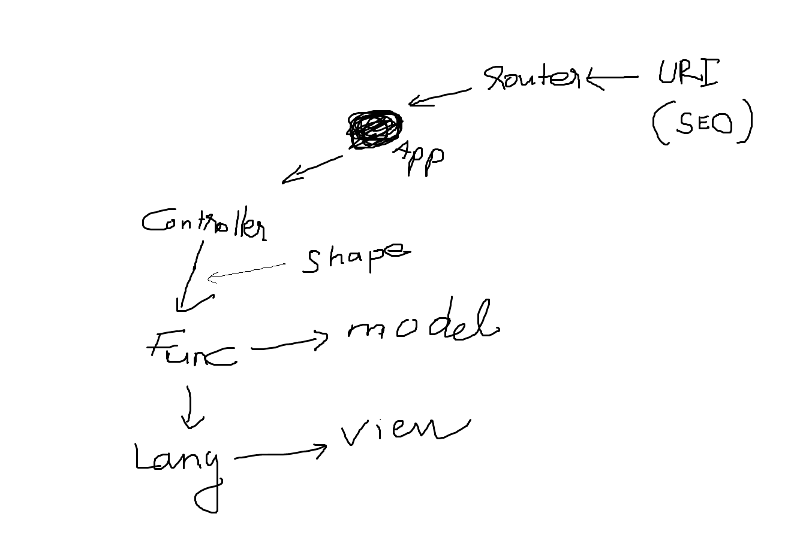

Luồng dữ liệu
- Độ khó: Cơ bản
- Bắt buộc: Cao
Chào mừng quay trở lại ! Đã đi đến phần này thì chắc bạn cũng bạn hiểu được phần trọng tâm của Ducky rồi. Tiếp theo chúng ta sẽ tìm hiểu về luồng dữ liệu.

Hình: Luồng dữ liệu của Ducky phiên bản 0.1.1
Bắt đầu từ URI
Đầu tiên bạn phải phân biệt được URI và URL đã.
- URL: Là đường dẫn sau khi đã SEO.
- URI: Là đường dẫn thô thiển xấu xa nhất, chứa các thông tin để phản hồi request.
Cả 2 đều phải duy nhất và tuân theo quy tắc riêng. Bạn có thể đọc lại bài viết về URI ở đây.
Khi Ducky nhận được 1 request, nó sẽ dựa theo cấu hình Route (URL Friendly) để tìm ra URI thật sự của request. Sau đó, URI sẽ được đưa vào lớp Route để phân tích.
Nếu xét về thứ tự gọi và nhúng tệp, thì tất cả request sẽ được chuyển về tệp index.php để xử lý. Từ tệp index.php, sẽ gọi hàm run() của tệp App.class.php, lớp App sẽ điều khiển toàn bộ quá trình sau đó. Bao gồm dùng controller nào, model và view nào, dịch ngôn ngữ ra sao.
Chính vì vậy, trên hình, App được xem là trung tâm xử lý.
<?php
// index.php
$app = new App();
$app -> run($_SERVER['REQUEST_URI']); //Gọi hàm run và truyền URI vào
?>
App gọi controller
Như đã nói ở trên, App sẽ là trung tâm xử lý. Như vậy:
- Nó sẽ lưu tất cả các thuộc tính cần dùng cho ứng dụng vào đối tượng
App. Ví dụ sau này trong lúc code, bạn muốn lấy$languagethì hãy dùng như sau nhé:App::_getLanguage(). - Các thuộc tính của
Appcó thể được dùng ở bất cứ đâu.
Sâu hơn nữa về App tôi đã trình bày rất rõ ràng ở đây.
Sau khi phân tích xong URI, App sẽ dùng segment controller trong URI để khởi tạo Controller tương ứng, sau đó gọi đến hàm tương ứng với segment controller_function nằm trong Controller vừa khởi tạo.
<?php
// App.class.php
class App
{
// Hàm run
public function run($uri)
{
//Khởi tạo lớp Route & phân tích URI
$router = new Route();
$router -> parse($uri);
//Lấy nội dung tương ứng với request
$controller = $router -> _getController();
$controllerFunc = $router -> _getControllerFunc();
$controllerObj = new $controller();
//Gọi hàm nằm trong controller, trả về $contents
$contents = $controllerObj -> $controllerFunc();
}
}
?>
controllerFunc() gọi Model và View
Việc gọi hàm này sẽ trả về nội dung của view. Tuy nhiên để trả về được nội dung đó, hàm này sẽ tiến hành gọi đến Model tương ứng với segment model. Model này sẽ thao tác với cơ sở dữ liệu. Sau đó, nhờ sự hỗ trợ của Template Engine (Shape), nội dung trả về sẽ được ghép vào khuôn HTML.
<?php
// App.class.php
class App
{
// Hàm run
public function run($uri)
{
//Khởi tạo lớp Route & phân tích URI
$router = new Route();
$router -> parse($uri);
//Lấy nội dung tương ứng với request
$controller = $router -> _getController();
$controllerFunc = $router -> _getControllerFunc();
$controllerObj = new $controller();
//Gọi hàm nằm trong controller, trả về $contents
$contents = $controllerObj -> $controllerFunc();
//Load view
$view = new View();
$shape = $router -> _getShape();
$shapeHtml = $view -> load($shape, $contents); //Lấy content ghép vào khuôn HTML
}
}
?>
Đa ngôn ngữ
Trước khi trả về nội dung cuối cùng, Ducky sẽ chạy lớp Language để dịch sang ngôn ngữ tương ứng với segment language của URI.
Tối ưu
Sau khi dịch hoàn tất, ở lớp cuối cùng, Ducky sẽ minify tệp html trả về. Tệp này cũng được cache (nếu cần) ở công đoạn này.
Viết ngày: 29/09/2017